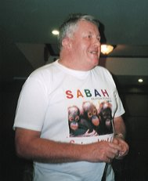
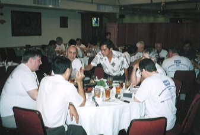
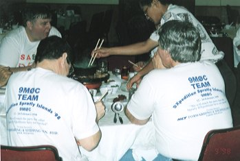
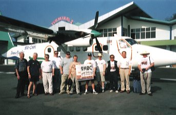
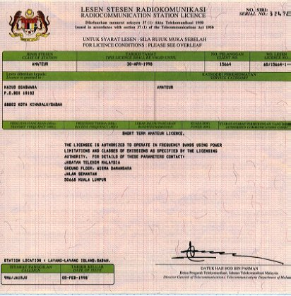

|
|
|
9M0C Spratly への道【9M0C・DX-Pedition参加まで】関東地方が正月早々2度の大雪にみまわれ、慣れない雪かきに汗を流していた1月11日、この話は突然飛び込んできた。英国のグループ、CDXC(Chiltern DX Club)が2月12日から24日にかけて計画している9M0C・Spratly IsのDX-Peditionに参加 してほしい、というものだった。 Spratly Isは昨年4月に行われたBS7H・スカーボローリーフのDX-Peditionに出掛ける前に計画していて、 直前になって中止になったいきさつがあったので、私にとって悪い話しではなかった。 時期的に難しいものがあったが50MHzバンドの運用が予定されているのが何よりも魅力となった。 しかし、あまりに急な話で準備が間に合うかが当面の問題となった。 CDXCはこのDX-Peditionに向けて1年以上も前から準備を進めていて、インターネットでHomepageまで作りPRに努めており、 そろそろ最後の詰めというところでの参加メンバーの変更となったようだ。 何はともあれ、9M6までの航空券の手配から始めることにした。 参加者にはSpratly Is.に渡る2月10日の前日までに東マレーシアのコタキナバルに集合するよう指示された。 それまでに参加のための誓約書、費用の支払い手続き、広報用資料の送付、9M6の免許申請手続きなど、 E-mailとFAXを使って英国やマレーシアとのやりとりが出発直前まで続いた。 たぶんこれらの通信ルートが無かったら今回の参加は実現しなかったかも知れない。
【9M6・Kota kinabaluへ】私(JA1RJU)を含めて多くの参加メンバーは2月9日に東マレーシアの首都・コタキナバルに集結した。 既に英国からのメンバー2人が2月8日に先発隊として現地に向かっていた。日本から東マレーシアのコタキナバルまで、成田からマレーシア航空の直行便が週一便でている。 これを利用すると約6時間ほどで到着する。 以前(と、言っても18年も前だが！)、9M6に6mのPeditionで行った時には、フィリピン経由で半日がかりだったことを思えば、 何と便利になったものだ。 コタキナバルへはこの直行便の他に、時間は掛かるが西マレーシアのクアラルンプール経由が毎日就航している。 帰りはこのルートを使った。 先発の2人を除く全メンバーが集結した2月9日の夜、SABA州のハムクラブ「SARS」の歓迎会兼壮行会が行われた。 この会には9M6CT(ex VS6CT)や、以前6mの運用でお世話になった9M6MA・Hassanも出席していて、18年ぶりの再会を喜びあった。 歓迎会には参加出来なかったが、9M6MAと共に6mでお世話になった9M6MO・Mohammedもホテルまで駆けつけてきてくれた。
   リーダーのG3NUG／参加メンバーを囲んで会食。9M0Cの揃いのTシャツ(胸にはオランウータンの絵)
【いざ、Spratly Is.へ】2月10日、08:30の便でコタキナバルからスプラトリーに出発する事になった。 飛行機はコタキナバルの第2空港から発着するサイガ航空の18人乗りの双発プロペラ機。 操縦席には操縦士と副操縦士の2人。 飛んでいるときも「足」が出ているので、スピードはあまり出そうにない。 これでフライト時間はスプラトリーまで片道約1時間。乗客の荷物は勿論、小物の手荷物から体重まで測定され、その合計で搭乗者の人数が決められる。 最近太めで体重を気にしていたが、メンバーのN2QW、K5VTなど135Kg級がゴロゴロしている外国勢に比べれば、 私の体重など子供？みたいなもので「ホッ」とする。
 
飛行機に乗り込む前に記念撮影。右から二人目がJA1RJU／コタキナバルの市街地
【9M6のアマチュア局免許】スプラトリーで運用するためには東マレーシアのJTM(郵政省に相当)発給のライセンスが必要となる。 申請書に資料を添えて申請すれば3カ月有効の臨時の許可をもらう事が出来る。 コールサインは原則として自国のコールサインの頭に9M6/を付加したものとなる。私の場合は9M6/JA1RJUとなり、 このコールサインでスプラトリーからの運用もOKとなった。当然のことながら9M0Cの免許も個人コールとは別に発給された。
 東マレーシアのJTMから発給された免許証 A4版ほどの大きさがある。有効期限は3カ月 (左下の囲みの中にコールサインが書かれている)
◎ このDX-Peditionでは、"Log Search"を Homepage経由で行なっています。 9M0Cに関する情報は 9M0C SPRATLY 1998 Homepageでご覧下さい。
|